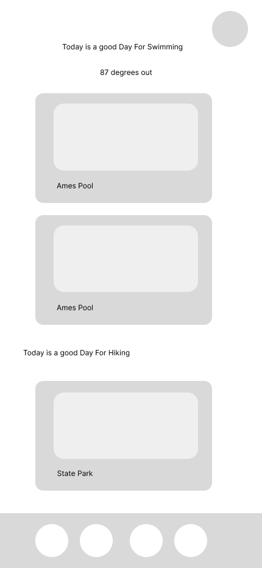
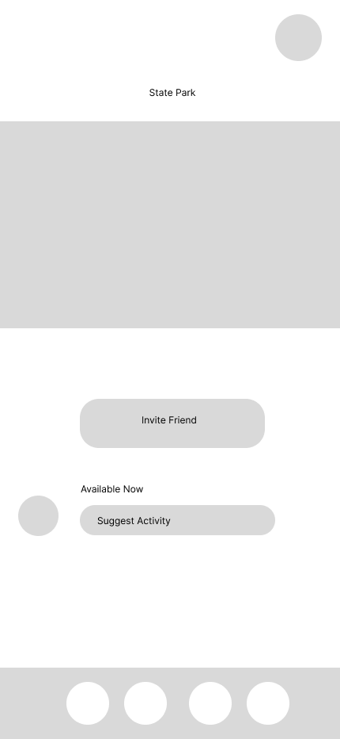
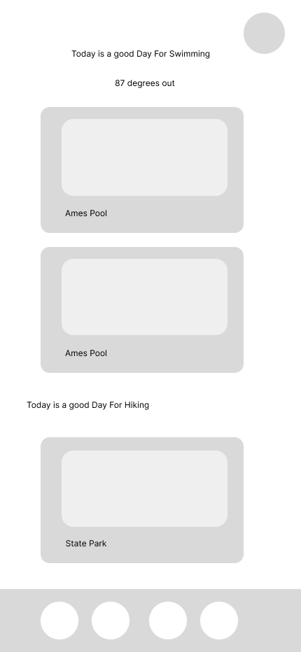
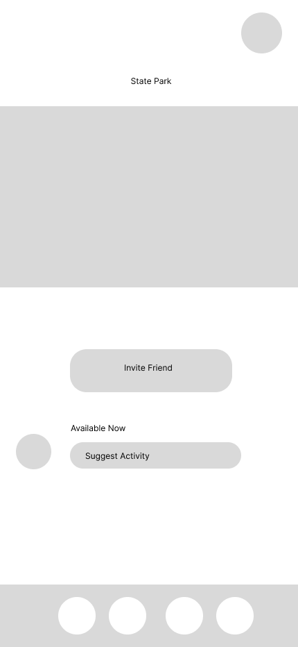
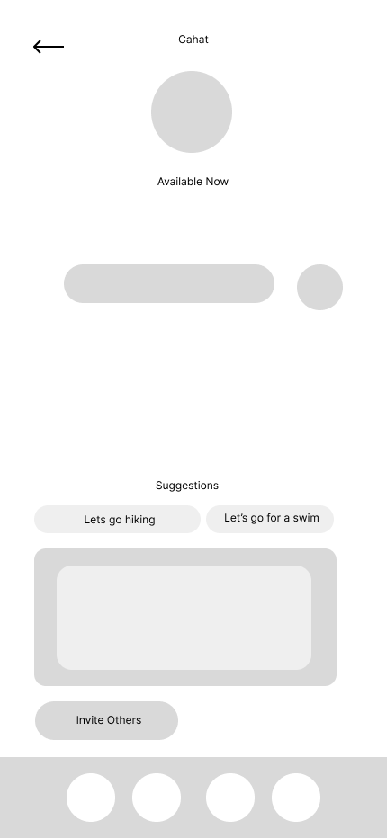
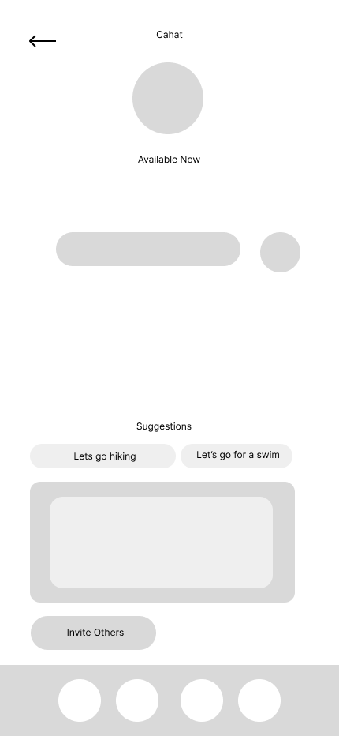

Reconnect is an app concept designed to tackle the growing issue of social media and screen addiction by offering a digital detox solution that encourages users to step away from their devices and reconnect with both nature and real-life relationships. With the increasing prevalence of screen time and social media use, many people find themselves overwhelmed, distracted, and socially disconnected despite being constantly online. Reconnect aims to break this cycle by reminding users of the importance of connections in their life, and encouraging them to reconnect to outside world by promoting local events, weather-based activities, and encouraging hangouts with friends.
In designing the Reconnect app, I conducted comprehensive user research to understand the behaviors, motivations, and pain points of individuals seeking digital detox and outdoor activities. I researched potential users such as college students who frequently find themselves staring at screens for long periods of time for classes, young people who struggle with addiction to social media, and people who work on their computer often. These interviews exposed what features people would benefit from an app centered around minimizing screen time.
Many users found that using screen time management systems were ineffective due to the lack of motivation it brougt to stay offline. Interviews also revealed that the motivation to stay offline were more efficient if there were external factors such as visiting friends or going to events.
After deciding what features would be best suited for user needs, I developed a Site Map of the flow of the app with the necessary screens and features.
 



 

The messaging for this brand is motivating, focused, and encouraging.
This logo concept represents social circles and being connected to those around you.
I chose dark mode for this app to represent the feeling of being offline and as a way of aiding with visual strain that screens bring. The bright green and blue act as energizing colors that relate to outdoors.

One of the deliverables needed for Road Safety Iowa was a black and white printable flyer. This flyer is to be used for police officers in Iowa to hand out to individuals suspected of having a substance use problem. Due to the limitation of police cars' printers, it was important for the flyer to be as minimal yet informative as possible.